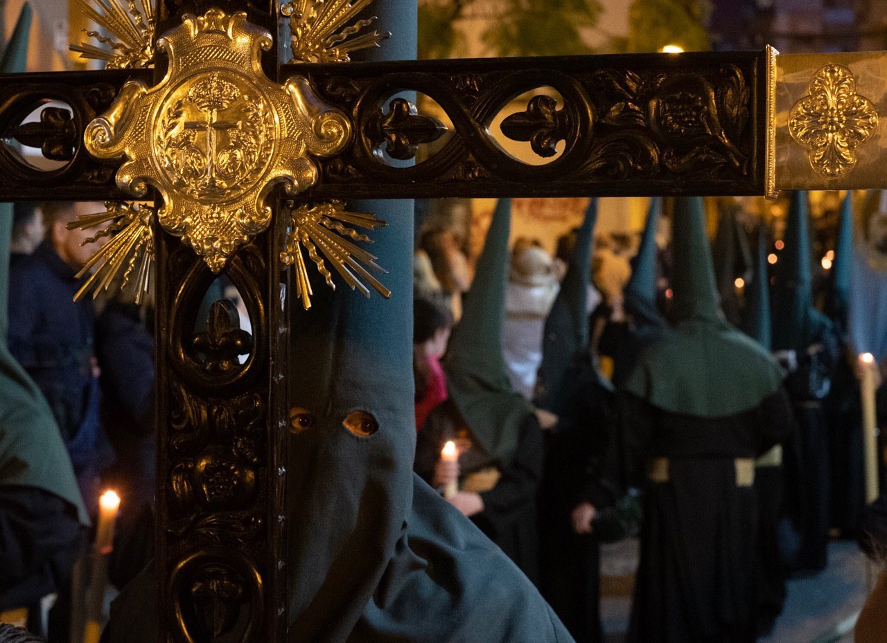
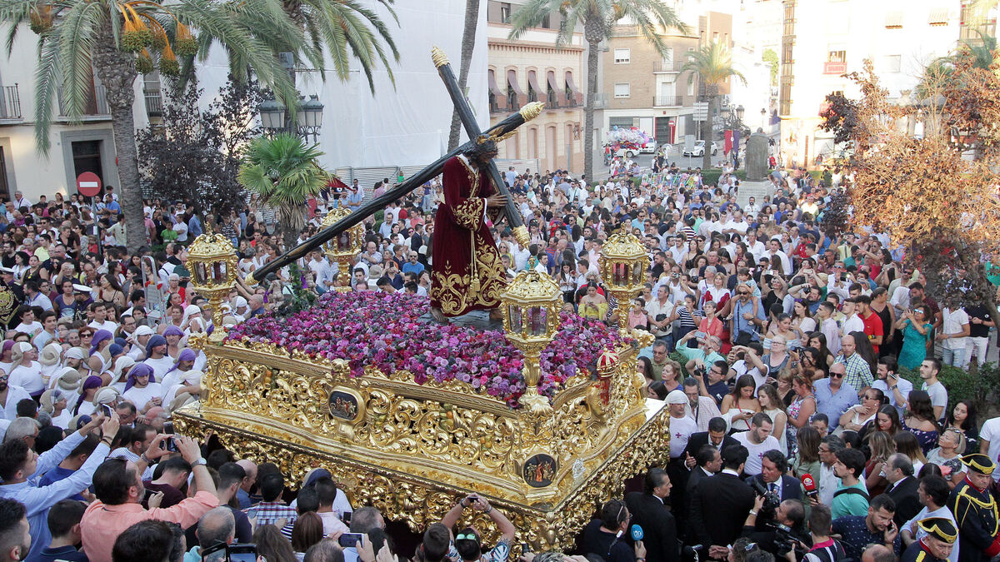
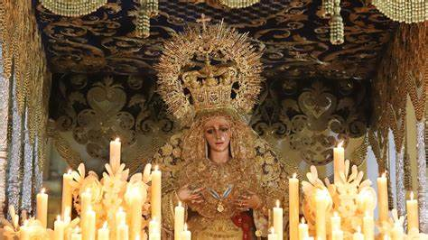
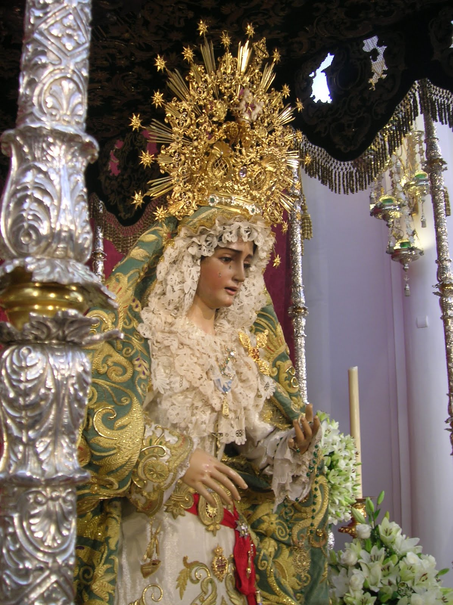
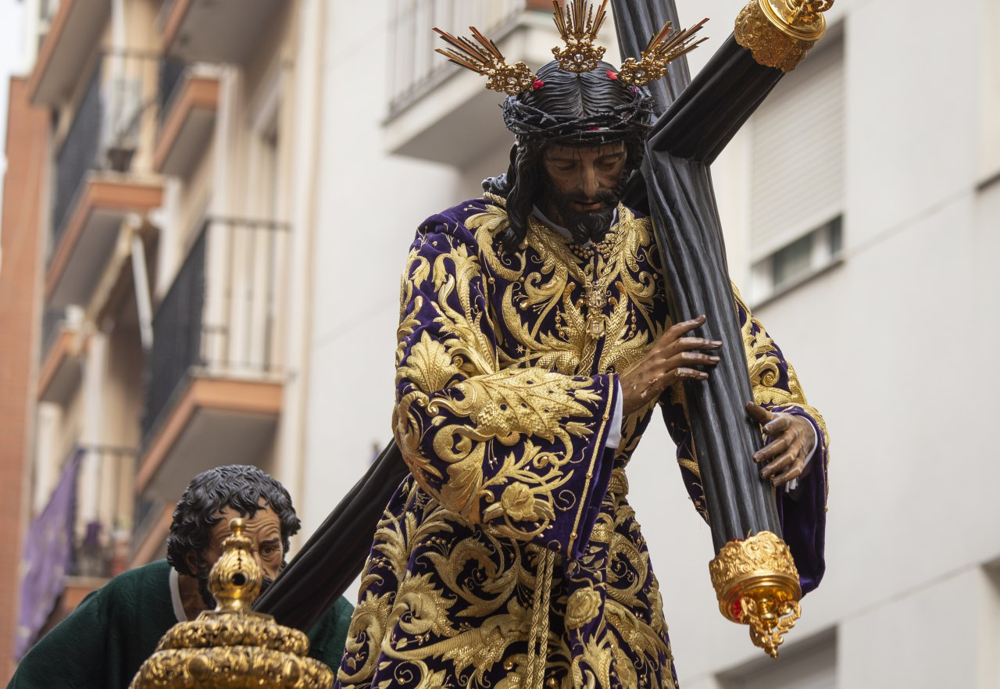
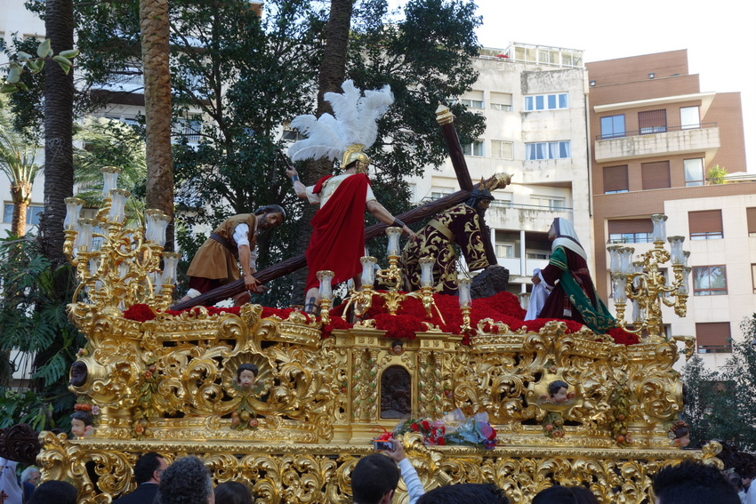

Orígenes y fundación de la Hermandad
-La devoción a los Dolores de Ntra. Sra. estuvo ya muy presente en la Huelva del XVII y XVIII, hecho que llevó a los padres mercedarios a iniciar las gestiones oportunas para fundar una V.O.T. de Siervos de María, y aunque no tenemos las fechas exactas en que se realizan estas peticiones, sí podemos advertir que el 15 de Diciembre de 1771 en el Convento de S. Marcelo de Roma se firmaba, por parte del Prior general, Fr. Francisco Raymundo Adami, la licencia para poder constituir dicha Congregación. Asimismo, junto con la patente fundacional, anexa todas las gracias, privilegios e indulgencias que, de ahora en adelante, esta Congregación poseerá. Tras la aprobación por parte del Prior General, es el 20 de Junio de 1772 cuando el Cardenal Arzobispo de Sevilla ratifica ésta y aprueba las Reglas y Constituciones que de ahora en adelante marcarán la vida interna de esta Confraternidad. Sólo dieciocho días después de este último hecho, el 8 de Julio de 1772, se obtiene carta de agregación a la Archicofradía de Ntra. Sra. de las Mercedes, con la consiguiente obtención de los numerosos privilegios, gracias, indulgencias, facultades e indultos que ésta goza. Paralela a esta agregación, se gesta la fusión con la Cofradía de Ntra. Madre y Sra. Mª Stma. de la Merced, congregación fundada a comienzos del siglo XVIII, por cuanto los esclavos de Mª Stma. de los Dolores eran los apoderados de dicha cofradía, con sede canónica en el mismo convento, para pasar a formar una sola Corporación donde sus hermanos se alisten bajo la Bandera de los Dolores y Merced. Es de destacar la tremenda devoción que el pueblo de Huelva comenzó a sentir por la Dolorosa de la Capilla Mercedaria, dando fe de ello las mandas y fundaciones que se hicieron en su honor, donaciones para el aderezo de la capilla y ella misma, numerosas peticiones de ser amortajado con el hábito de la Confraternidad, y la más significativa: la existencia de un exvoto, único en la ciudad, donde se narra un milagro de la Stma. Virgen: «Caio DN Bernardo Basconcelos con una grave enfermedad y desahuciado de los médicos se encd. a la Virgen de los Dolores i a Sn. Franc. de Paula i quedó bien. Año 1775». Estaba situado junto al altar de tan devota imagen, fechado en 1775, y narraba la intercesión que Nuestra Amada Titular tuvo en la milagrosa curación del platero de la Villa de Huelva, Bernardo Basconcelos. Otro hecho importante que en este período tiene lugar es la primera salida procesional de María Stma. de los Dolores en Semana Santa, lo que se traduce en la obtención del carácter penitencial, al pasar a formar parte de la nómina de hermandades que realiza estación de penitencia durante la Semana de Pasión en Huelva. Se llevó a cabo el Domingo de Ramos de 1792, haciendo estación de penitencia en las Parroquias de la Mayor de San Pedro y de la Purísima Concepción. La obtención del carácter Penitencial, las inquietudes espirituales de sus congregantes, así como diferentes avatares históricos, tendrían como resultado la incorporación de Nuestro Señor Jesucristo como Titular de la Corporación. Para ello los hermanos ponen sus miras en el Cristo de las Cadenas, imagen de gran devoción que atesoraba la V.O.T. y que, de aquí en adelante, se convertiría en el titular Cristífero de la Congregación.
Nuestro padre Jesús de las cadenas
-SeLa más antigua alusión a Nuestro Padre Jesús de las Cadenas es del siglo XVII y la encontramos en el testamento de Catalina de San Diego el 24 de enero de 1657, lo que hace suponer una devoción anterior. En él manda «así mismo cincuenta misas rezadas por mi alma, las cuales… quiero y es mi voluntad se digan en el convento de Nuestra Señora de la Merced por sus religiosos quitada la cuarta parte, que han de decir los señores clérigos, y, pido y encargo a los dichos Religiosos las digan en el altar del Santo Cristo de las Cadenas, que es el privilegiado». Leonor Buenaña manda en 1670 «se me digan tres misas de agonía en la Merced y que se digan en el altar del Santo Christo de las Cadenas». Al igual, impone sobre una casa de su propiedad «una memoria de diez misas rezadas y dos cantadas en cada un año. Y las dos cantadas se digan el día del Señor San Joseph, la una en el altar de Nuestra Señora de las Merced y la otra en el altar del Santo Cristo de las Cadenas y las rezadas se digan en el discurso del año…». En el año 1735, hallándose en Huelva Fr. Manuel Terrero de Rosas, Obispo de Icossio, del Consejo de su Majestad, concedió indulgencias para esta imagen: “Concedemos cuarenta días de indulgencias a todas y qualesquiera personas, que resaren un credo delante de la imagen del Señor de las Cadenas que se venera en la Iglesia de Nuestra Señora de la Merced desta villa de Huelva. Dada en Huelva a 11 días de abril de 1735”. Se desconoce su paternidad artística, aunque recientes hipótesis lo atribuyen, si documentación alguna, a la escuela gaditano-genovesa. Ntro. Señor fue restaurado por D. José Antonio Roca en 1984, por el Taller Isbilia en 1994 y, finalmente, en 2015 fue sometido a una leve intervención por D. Pedro Manzano para adecuarlo al nuevo pedestal. Los cultos que la Hermandad le dedica anualmente son el Besapiés el primer viernes de marzo, día del Señor Cautivo, y el Triduo a Nuestro Señor Jesucristo en años alternos.
Santísimo Cristo de Jerusalén y Buen Viaje
a cita más antigua del Cristo del Buen Viaje es de 1647 y se trata del testamento de Francisco Beltrán el 27 de abril, en el que en una de sus mandas se indica: «se me digan y canten… una memoria de misas en el convento de Descalzos de Nuestra Señora de la Merced desta villa, las cinco restantes en cinco viernes de Cuaresma en el altar del Santo Cristo». La primera referencia escrita de la Cofradía del Stmo. Cristo de Jerusalén y Buen Viaje, se encuentra en el testamento de Diego Fernández Navarro de 3 de enero de 1653 en el que dice que «mando se le de limosna a la Cofradía del Santísimo Sacramento, Animas del Purgatorio y Santo Christo de Jerusalén dos reales de limosna a cada una por una vez». El 4 de mayo de 1941, en sesión de Junta de Gobierno, la hermandad acuerda incorporar al Stmo. Cristo de Jerusalén y Buen Viaje como titular de nuestra Corporación. El Cristo es de autor anónimo, atribuyéndose, sin documentación alguna, a la escuela gaditano-genovesa. Existe constancia de una restauración en 1937 por D. Miguel Llacer, para adecuarlo a la procesión. Posteriormente fue intervenido en 1983 por D. José Antonio Díaz Roca y en 2011 fue sometido a una restauración integral en el I.A.P.H. bajo la dirección de D. Pedro Manzano.
María Santísima de los Dolores
La imagen titular a la que esta Confraternidad ha venerado a través del tiempo se trata de una talla anónima de candelero para vestir, hallándose sus primeras referencias a finales del siglo XVII. El 31 de octubre de 1689, D. Diego de Guzmán y Quesada fundaba una memoria de misas en la Iglesia de la Merced el Viernes de Dolores de Ntra. Señora, lo que hace pensar al historiador D. Diego Díaz Hierro que «ello quería decir que el Viernes de Dolores tenía para don Diego mucho más sabor en la Merced, que en su iglesia de la Soledad. Y ese sabor no podía consustanciarse a no ser delante de una imagen de la Virgen de los Dolores…». Antonia María Hernández también funda en 1748 una memoria de misas el Viernes de Dolores en la Merced: «Item instituie y funda desde el día de su fallecimiento, una memoria perpetua para en cada año se digan por su ánima y en el día de Ntra. Sra. de los Dolores, dos misas resadas, a cargo del Convento de Nuestra Señora de las Mercedes de esta villa…». En el testamento de Alonso de Mora y Mendoza, otorgado el 21 de febrero de 1776, aparece: «Instituio y fundo una memoria perpetua a cargo del Convento de Nuestra Señora de la Merced desta villa, para que en cada un año se digan por mi alma dos misas rezadas en los dias y altares respectivos de dicha Señora y de la de Dolores situados en la iglesia del expresado convento». Tradicionalmente ha sido atribuida a la escuela sevillana, en concreto a Pedro Roldán y posteriormente a su hija, Luisa Roldán “la Roldana”, aunque recientes investigaciones la acercan, igualmente sin documentación alguna, al quehacer de los artistas genoveses afincados en Cádiz. Las restauraciones de las que se tienen constancia fueron producidas en los años 50 y 60 del pasado siglo por D. Antonio León Ortega, en 1993 por el Taller Isbilia y en 2016 por el conservador y restaurador D. Pedro Manzano. Los cultos que la Hermandad le dedica anualmente son un devoto triduo durante los días 12, 13, y 14 de septiembre y la Solemne Función del día 15 de septiembre, día en que la imagen está expuesta durante todo el día a la veneración de los fieles en solemne besamanos.
|  |
 |
 |
|||
|  |
 |
 |